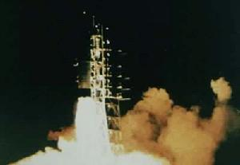
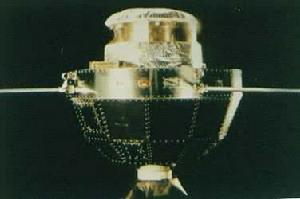

空间技术
１．人造地球卫星
中国于1970年4月24日成功地研制并发射了第一颗人造地球卫星“东方红一号”，成为世界上第五个独立自主研制和发射人造地球卫星的国家。截至2000年10月，中国共研制并发射了47颗不同类型的人造地球卫星，飞行成功率达90%以上。目前，中国已初步形成了四个卫星系列——返回式遥感卫星系列、“东方红”通信广播卫星系列、“风云”气象卫星系列和“实践”科学探测与技术试验卫星系列，“资源”地球资源卫星系列也即将形成。中国是世界上第三个掌握卫星回收技术的国家，卫星回收成功率达到国际先进水平；中国是世界上第五个独立研制和发射地球静止轨道通信卫星的国家。中国的气象卫星、地球资源卫星主要技术指标已达到二十世纪九十年代初期的国际水平。近几年来，中国研制并发射的6颗通信、地球资源和气象卫星投入使用后，工作稳定，性能良好，产生了很好的社会效益和经济效益。
２．运载火箭
中国独立自主地研制了12种不同型号的“长征”系列运载火箭，适用于发射近地轨道、地球静止轨道和太阳同步轨道卫星。“长征”系列运载火箭近地轨道最大运载能力达到9200千克，地球同步转移轨道最大运载能力达到5100千克，基本能够满足不同用户的需求。自1985年中国政府正式宣布将“长征”系列运载火箭投入国际商业发射市场以来，已将27颗外国制造的卫星成功地送入太空，在国际商业卫星发射服务市场中占有了一席之地。迄今，“长征”系列运载火箭共实施了63次发射；1996年10月至2000年10月，“长征”系列运载火箭已连续21次发射成功。
３． 航天器发射场
中国已建成酒泉、西昌、太原三个航天器发射场，并圆满完成了各种运载火箭的飞行试验和各类人造卫星、试验飞船的发射任务。中国航天器发射场既可完成国内发射任务，又具有完成为国际商业发射服务和开展其他国际航天合作的能力
４． 航天测控
中国已建成完整的航天测控网，包括陆地测控站和海上测控船，圆满完成了从近地轨道卫星到地球静止轨道卫星、从卫星到试验飞船的航天测控任务。中国航天测控网已具备国际联网共享测控资源的能力，测控技术达到了世界先进水平。
５．载人航天
中国于1992年开始实施载人飞船航天工程，研制了载人飞船和高可靠运载火箭，开展了航天医学和空间生命科学的工程研究，选拔了预备航天员，研制了一批空间遥感和空间科学试验装置。1999年11月20日至21日，中国成功地发射并回收了第一艘“神舟”号无人试验飞船，标志着中国已突破了载人飞船的基本技术，在载人航天领域迈出了重要步伐。